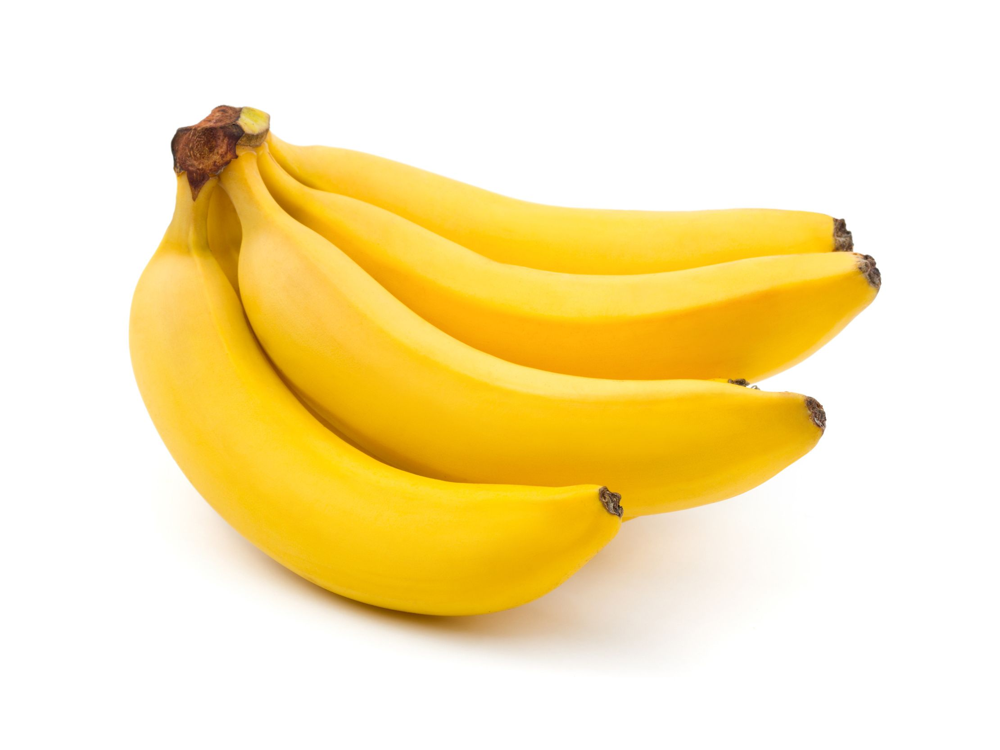

Banana
Banana

-------------------------------------------------------
La banana,conocida también como banano, plátano, guineo maduro, guineo, cambur o gualele, es un fruto comestible de varios tipos de grandes plantas herbáceas del género Musa (de origen indomalayo). A estas plantas de gran porte que tienen aspecto de arbolillo se las denomina plataneras, bananeros, bananeras, plátanos o bananos.
Es un fruto con cualidades variables en tamaño, color y firmeza, alargado, generalmente curvado y carnoso, rico en almidón cubierto con una cáscara, que puede ser verde, amarilla, roja, púrpura, dorada o marrón cuando está madura. Los frutos crecen en piñas que cuelgan de la parte superior de la planta. Casi todos los plátanos en la actualidad son frutos estériles que no producen semillas fructificantes y provienen de dos especies silvestres: Musa acuminata y Musa balbisiana. El nombre científico de la mayoría de los plátanos cultivados es Musa × paradisiaca, el híbrido Musa acuminata × M. balbisiana, con distintas denominaciones var. o cultivares, dependiendo de su constitución genómica.
Los plátanos, de los que se conocen más de 1000 variedades, proporcionan alimento a grandes poblaciones humanas en dos formas principales:
Plátanos de postre o dulces, para comer principalmente crudos, con gran parte de su fécula convertida en azúcar, destacando la variedad cavendish, que representa aproximadamente el 47% de la producción mundial.
Plátanos de cocinar o de guisar, más grandes, se comen cocinados de formas diversas, con diferentes variedades como el plátano macho o el pisang awak en Asia. Se suelen consumir hervidos, asados o fritos, independientemente de si están maduros o no.
-------------------------------------------------------
BANANA
BANANABANANABANANABANANABANANABANANABANANABANANABANANABANANABANANABANANABANANABANANABANANABANANA
-------------------------------------------------------
-------------------------------------------------------